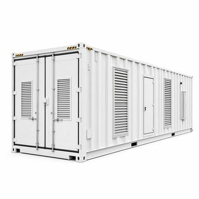
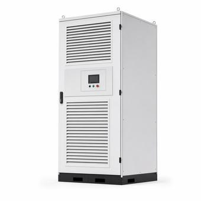
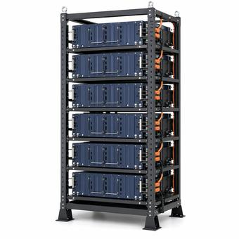

Utility-Scale Battery Storage Reference
DC blocks, PCS, BMS, fire suppression and thermal management for BESS projects — how a system is put together, and the codes that govern it.
What's driving BESS equipment
Global battery storage capacity has now overtaken pumped hydro, with more than 130 GW of further additions expected this year, led by the US, China, and Australia — BESS has gone from a niche grid asset to a mainstream one in a few years.
Turnkey pricing keeps falling — BloombergNEF's latest survey put the global average around $117/kWh, down roughly 31% year over year — though FEOC-compliant sourcing for US buyers chasing tax credits still carries a premium over that global average. At the same time, operators say the business itself has gotten more complex, shifting from simple energy arbitrage toward active risk management as markets like ERCOT mature.
The Storage sector covers DC block BESS units, PCS (power conversion system) and BMS, EMS, BESS fire suppression equipment, and thermal management — 212 configurations built to NFPA 855 and UL 9540A, configured and quoted against current lead times.
Sourcing storage components on a tax-credit-eligible project? See FEOC Compliance for Solar & Storage. Planning site layout around NFPA 855? See BESS Fire Safety Basics.
Duration and C-rate
A "4-hour BESS" means the system can discharge its full rated power continuously for 4 hours — the industry shorthand for that is C-rate, where a 4-hour system is C/4 (a quarter of capacity per hour) and a 1-hour system is 1C. Duration is set first, then it drives how many DC blocks get specified for a given power (MW) rating — a 100 MW / 4-hour project needs roughly four times the DC block count of a 100 MW / 1-hour project at the same power electronics. Most new US utility-scale BESS is now specified at 4 hours or longer, largely to qualify for ITC stacking and to better match evening peak-demand windows as solar penetration grows.
Grid-forming vs. grid-following PCS
Most PCS (power conversion system) units installed to date are grid-following — they synchronize to a voltage and frequency the grid is already providing. Grid-forming PCS can establish that voltage and frequency itself, the way a spinning generator does, which matters increasingly on grids adding large amounts of inverter-based renewable and storage capacity that need to keep the grid stable without conventional generation doing all the work. Grid-forming PCS currently quotes around 32 weeks and is increasingly specified on new interconnection requests as utilities update their technical requirements.
Augmentation: planning for capacity fade
Lithium battery capacity fades over the life of a project — a system sized to meet its nameplate rating on day one won't still meet it in year 10 without adding capacity back. Augmentation is the practice of specifying and budgeting for additional DC blocks partway through the project's life to offset that fade and hold the contracted capacity, and it's now standard practice to plan for in the original procurement rather than treat as a surprise mid-life expense. See BESS Augmentation Explained for how fade actually happens and how a phased plan gets built.
Fire suppression, BMS, and EMS
NFPA 855 and UL 9540A drive both equipment selection and site layout — clean-agent and aerosol suppression systems are common choices for containerized BESS, sized and spaced according to the same test data that sets separation distances between units; see BESS Fire Safety Basics for how the two standards fit together. Inside the system, the BMS (battery management system) manages cell-level voltage, temperature, and balancing within each block, while the EMS (energy management system) operates at the plant level — dispatch, market participation, and coordinating multiple DC blocks and PCS units as one asset.
Storage equipment by category
Tools for storage engineers
Common questions
What's the current price range for BESS DC blocks?
LFP DC blocks are running roughly $110-140/kWh in the current market, above the roughly $117/kWh global turnkey average, as FEOC-compliant sourcing carries a premium for US buyers chasing tax credits.
What does "4-hour BESS" and C-rate mean?
It means the system can discharge its full rated power continuously for 4 hours -- C/4 in C-rate shorthand. Duration is set first and directly drives DC block count for a given power rating.
What's the difference between grid-forming and grid-following PCS?
Grid-following PCS synchronizes to voltage and frequency the grid already provides; grid-forming PCS can establish that voltage and frequency itself, similar to a spinning generator -- increasingly specified as grids add more inverter-based capacity.
What's included in the Storage sector?
DC blocks, PCS, BMS, EMS, fire suppression, and thermal management — 212 configurations built to NFPA 855 and UL 9540A.
Is battery storage bigger than pumped hydro now?
Yes — global BESS capacity topped 250 GW in 2025, overtaking pumped hydro, per Rystad Energy's 2026 outlook.
Top storage families
What's moving in battery storage

Saudi Arabia leads monthly BESS deployments for the first time
Some 9.1 GW/33.5 GWh of utility-scale battery storage came online globally in June 2026, with Saudi Arabia's 2.5 GW/12.5 GWh — built from five Saudi Electricity Company projects using BYD batteries — outpacing China for the first time in 18 months of tracking, per Benchmark Mineral Intelligence data.

Global battery storage capacity overtakes pumped hydro
Rystad's 2026 outlook finds global BESS capacity topped 250 GW in 2025, with more than 130 GW of further additions expected this year, led by the US, China, and Australia.

US posts record Q1 energy storage installations
The US installed a record 3.3 GW/8.4 GWh of battery storage in Q1 2026, up 54% over the prior Q1 record, with utility, commercial, and residential segments all hitting new highs, per ACP and Wood Mackenzie's latest storage monitor.
Specifying a BESS project?
Paste your DC block, PCS, and BMS list — every line is matched against 212 storage configurations, with current $/kWh benchmark ranges.
Every family, with its specs and lead time
Each family below has its own reference page: how it is specified, the standards it is built to, its indicative lead time and its market price band.
Battery Components
Controls (BMS/EMS)
Enclosures & Integration
Fire Suppression & Safety
Power Conversion
Storage Blocks
Thermal Management